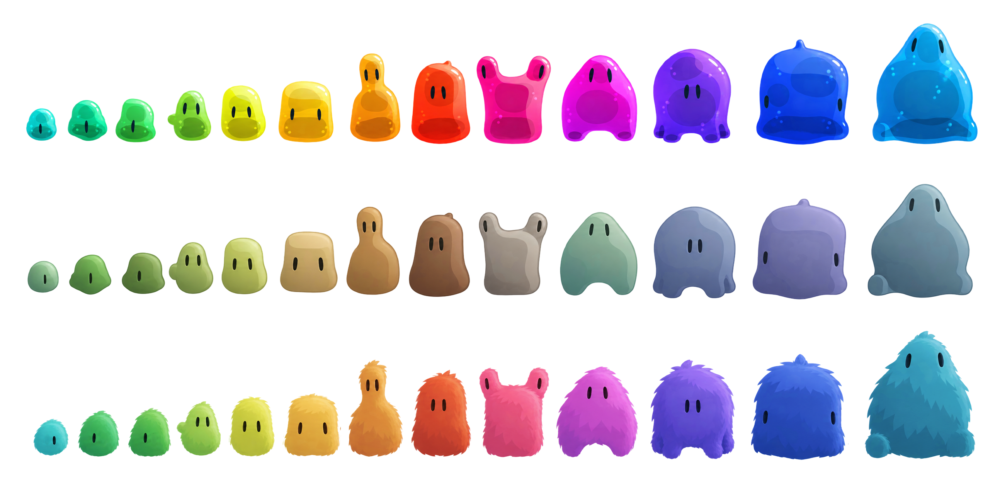

Vorlage 3DGleiche Ansicht, gleicher Maßstab wie die Vorlage. Regler ziehen: links die Zeichnung, rechts das Echtzeit-Modell. Tippe auf einen Blob, um ihn auf der Bühne anzusehen.
Ziehen dreht, zwei Finger zoomen. Tippen auf den Blob lässt ihn hüpfen.
36 Blobs auf einem 6×6-Brett, gemischt aus allen Stufen und Materialien. Die Anzeige rechts unten zeigt Bildrate, Bildzeit und Draw Calls. Ziel auf dem iPhone: ≥ 58 fps, Draw Calls ≤ 100.
Stufe 1 zur Abnahme: Hier wird noch nichts geschnitten. Die farbigen Ringe zeigen, wo das System die Teile trennen würde: am Übergang vom Rumpf zum Teil, in der schmalsten natürlichen Falte. Bitte prüfen: Liegen die Grenzen dort, wo du sie als Artist setzen würdest? Graue Ringe mit „unsicher“ hat das System nicht sicher gefunden. Bei „gesetzt“ habe ich den Ansatzpunkt vorgegeben, das System hat nur die Falte daneben gesucht.
System: Jedes Element hat einen Typ (Kopf, Hals, Bein, Arm, Schwanz, Ohr) und einen Andockring. Jeder Rumpf und manche Elemente haben Sockel. Ein Element passt auf einen Sockel seines Typs (Bein und Arm untereinander, Kopf auch auf den Hals-Sockel). Andocken: Ring auf Sockel, Richtung auf Richtung, Größe nach Ringradius. Aussehen ist hier noch nicht das Ziel.